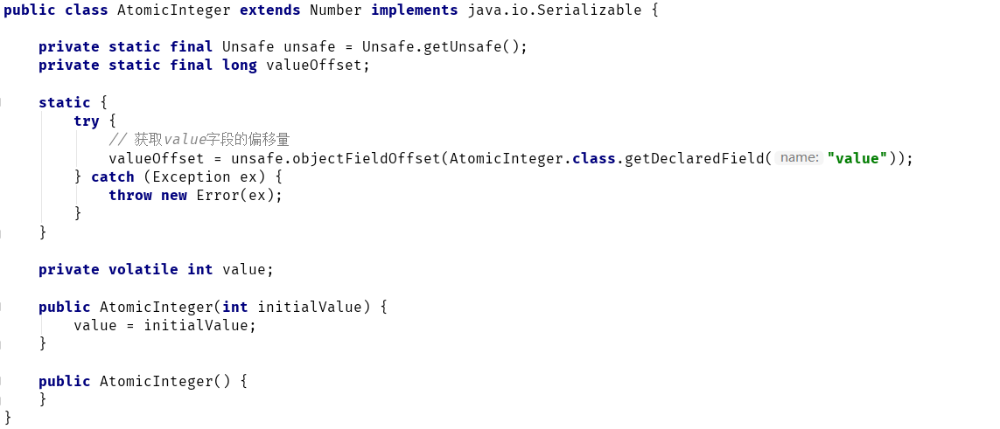
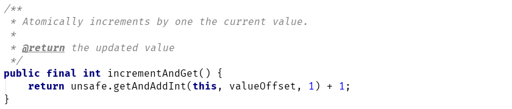
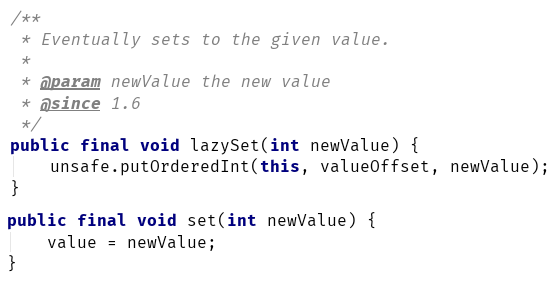
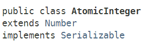
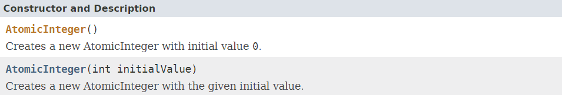

AtomicInteger，应该是atomic框架中用得最多的原子类了。顾名思义，AtomicInteger是Integer类型的线程安全原子类，可以在应用程序中以原子的方式更新int值。
先来看下AtomicInteger对象的创建。
AtomicInteger提供了两个构造器，使用默认构造器时，内部int类型的value值为0：AtomicInteger atomicInt = new AtomicInteger();
AtomicInteger类的内部并不复杂，所有的操作都针对内部的int值——value，并通过Unsafe类来实现线程安全的CAS操作：

来看下面这个示例程序：
public class Main {
public static void main(String[] args) throws InterruptedException {
AtomicInteger ai = new AtomicInteger();
List<Thread> list = new ArrayList<>();
for (int i = 0; i < 10; i++) {
Thread t = new Thread(new Accumlator(ai), "thread-" + i);
list.add(t);
t.start();
}
for (Thread t : list) {
t.join();
}
System.out.println(ai.get());
}
static class Accumlator implements Runnable {
private AtomicInteger ai;
Accumlator(AtomicInteger ai) {
this.ai = ai;
}
@Override
public void run() {
for (int i = 0, len = 1000; i < len; i++) {
ai.incrementAndGet();
}
}
}
}
上述代码使用了AtomicInteger的incrementAndGet方法，以原子的操作对int值进行自增，该段程序执行的最终结果为10000（10个线程，每个线程对AtomicInteger增加1000），如果不使用AtomicInteger，使用原始的int或Integer，最终结果值可能会小于10000（并发时读到了过时的数据或存在值覆盖的问题）。
我们来看下incrementAndGet内部：

内部调用了Unsafe类的getAndAddInt方法，以原子方式将value值增加1，然后返回增加前的原始值。
注意，上述是JDK1.8的实现，在JDK1.8之前，上述方法采用了自旋+CAS操作的方式：
public final int getAndIncrement() {
for (;;) {
int current = get();
int next = current + 1;
if (compareAndSet(current, next))
return current;
}
}
AtomicInteger中有一个比较特殊的方法——lazySet：

lazySet方法是set方法的不可见版本。什么意思呢？
我们知道通过volatile修饰的变量，可以保证在多处理器环境下的“可见性”。也就是说当一个线程修改一个共享变量时，其它线程能立即读到这个修改的值。volatile的实现最终是加了内存屏障：
保证写volatile变量会强制把CPU写缓存区的数据刷新到内存
读volatile变量时，使缓存失效，强制从内存中读取最新的值
由于内存屏障的存在，volatile变量还能阻止重排序
lazySet内部调用了Unsafe类的putOrderedInt方法，通过该方法对共享变量值的改变，不一定能被其他线程立即看到。也就是说以普通变量的操作方式来写变量。
为什么会有这种奇怪方法？什么情况下需要使用lazySet呢？
考虑下面这样一个场景：
private AtomicInteger ai = new AtomicInteger();
lock.lock();
try
{
// ai.set(1);
}
finally
{
lock.unlock();
}
由于锁的存在：
所以，上述ai.set(1)可以用ai.lazySet(1)方法替换：
由锁来保证共享变量的可见性，以设置普通变量的方式来修改共享变量，减少不必要的内存屏障，从而提高程序执行的效率。


| 方法声明 | 描述 |
|---|---|
| int accumulateAndGet(int x, IntBinaryOperator accumulatorFunction) | 使用IntBinaryOperator 对当前值和x进行计算，并更新当前值，返回计算后的新值 |
| int addAndGet(int delta) | 以原子方式将给定值与当前值相加，返回相加后的新值 |
| boolean compareAndSet(int expect, int update) | 如果当前值 == expect，则以原子方式将该值设置为给定的更新值（update） |
| int decrementAndGet() | 以原子方式将当前值减 1，返回新值 |
| int get() | 获取当前值 |
| int getAndAccumulate(int x, IntBinaryOperator accumulatorFunction) | 使用IntBinaryOperator 对当前值和x进行计算，并更新当前值，返回计算前的旧值 |
| int getAndAdd(int delta) | 以原子方式将给定值与当前值相加，返回旧值 |
| int getAndDecrement() | 以原子方式将当前值减 1，返回旧值 |
| int getAndIncrement() | 以原子方式将当前值加 1，返回旧值 |
| int getAndSet(int newValue) | 以原子方式设置为给定值，并返回旧值 |
| int getAndUpdate(IntUnaryOperator updateFunction) | 使用IntBinaryOperator 对当前值进行计算，并更新当前值，返回计算前的旧值 |
| int incrementAndGet() | 以原子方式将当前值加 1，返回新值 |
| void lazySet(int newValue) | 设置为给定值，但不保证值的改变被其他线程立即看到 |
| void set(int newValue) | 设置为给定值 |
| int updateAndGet(IntUnaryOperator updateFunction) | 使用IntBinaryOperator 对当前值进行计算，并更新当前值，返回计算后的新值 |
| boolean weakCompareAndSet(int expect, int update) | weakCompareAndSet无法保证除操作目标外的其他变量的执行顺序( 编译器和处理器为了优化程序性能而对指令序列进行重新排序 )，同时也无法保证这些变量的可见性。 |
与AtomicInteger类似的原子类还有AtomicBoolean和AtomicLong，底层都是通过Unsafe类做CAS操作，来原子的更新状态值。可以参考Oracle官方文档：https://docs.oracle.com/javase/8/docs/api/ ，不再赘述。